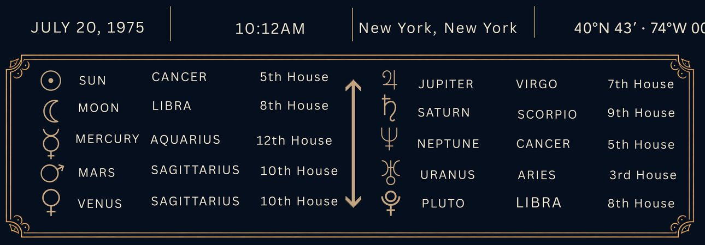
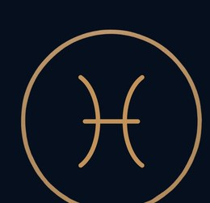
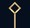
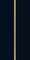
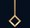
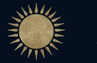
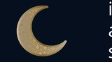
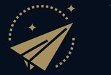
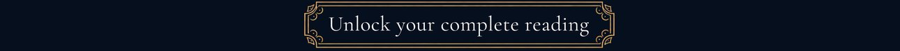

YOUR ASCENDANT
PISCES



You present yourself with a gentle, adaptable style, often adjusting naturally to the people and setting around you. Others may see you as approachable, creative, and difficult to define. Your softer manner puts people at ease, while your fluid presence allows you to move comfortably between different social worlds.

You express yourself with warmth, sensitivity, and a strong protective instinct, especially through creative self-expression, romance, and playful exploration. This placement highlights your need to shine through art, affection, and heartfelt creativity, and you feel most confident when you can share your emotions in ways that feel personal, expressive, and emotionally engaging to others.

You feel most secure when your emotional world is balanced within deep, intimate bonds. You are highly perceptive in close relationships, often acting as a mediator in moments of emotional intensity, yet you may struggle with fully confronting conflict if it disrupts your inner sense of peace. True emotional stability comes when you allow yourself to engage in honest, profound connection without sacrificing your need for fairness, trust, and mutual respect.

With Mars and Venus in Sagittarius in your 10th House, you thrive in work that offers freedom, creativity, and purpose. You bring ambition and personal magnetism to your public life and succeed when you can inspire others, explore new ideas, and continue expanding your world.
